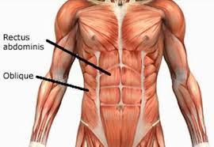

There are three layers of muscles in the abdominal wall. They are, from the outside to the inside: external oblique, internal oblique, and transverse abdominal.[5] The first three layers extend between the vertebral column, the lower ribs, the iliac crest and pubis of the hip. All of their fibers merge towards the midline and surround the rectus abdominis in a sheath before joining up on the opposite side at the linea alba. Strength is gained by the criss-crossing of fibers, such that the external oblique runs downward and forward, the internal oblique upward and forward, and the transverse abdominal horizontally forward.
The transverse abdominal muscle is flat and triangular, with its fibers running horizontally. It lies between the internal oblique and the underlying transverse fascia. It originates from Poupart's ligament, the inner lip of the ilium, the lumbar fascia and the inner surface of the cartilages of the six lower ribs. It inserts into the linea alba behind the rectus abdominis.
The rectus abdominis muscles are long and flat. The muscle is crossed by three fibrous bands called the tendinous intersections. The rectus abdominis is enclosed in a thick sheath, formed as described above, by fibers from each of the three muscles of the lateral abdominal wall. They originate at the pubis bone, run up the abdomen on either side of the linea alba, and insert into the cartilages of the fifth, sixth, and seventh ribs. In the region of the groin, the inguinal canal, is a passage through the layers. This gap is where the testes can drop through the wall and where the fibrous cord from the uterus in the female runs. This is also where weakness can form, and cause inguinal hernias.
The pyramidalis muscle is small and triangular. It is located in the lower abdomen in front of the rectus abdominis. It originates at the pubic bone and is inserted into the linea alba halfway up to the navel.